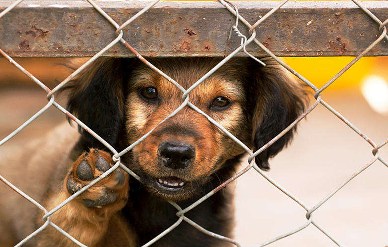

Andy
Andy is a mixed breed dog between a pug and a terrier, uncertain what kind of terrier. He was born on January 14, 2022 and weighs around 8 kg.
Brumble
Brumle is a beautiful Finnish Lapphund who was born on 05.10.2024. He weighs about 24 kg.
Lulu
Lulu is a mixed breed dog of border collie 75% and labrador retriever 25% born in 2020. She weighs about 15 kg.